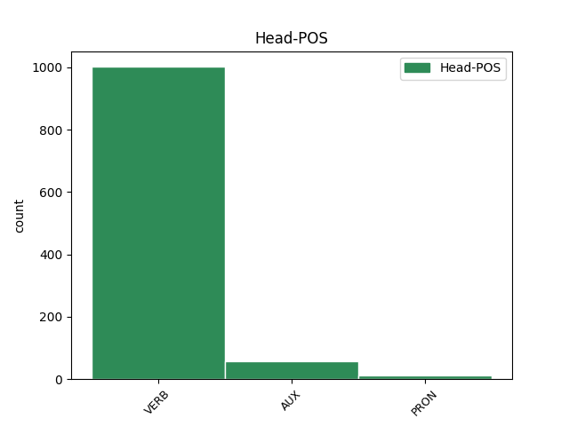

Distribution of features within this leaf

Agreement Rules sorted by frequency.
- When the dependent token is the direct object complements(comp:obj) of the head token, and the dependent token is PRON.
1 Důvod _ _ _ _ 0 _ _ _
2 toho _ _ _ _ 0 _ _ _
3 mistr _ _ _ _ 0 _ _ _
4 nechápal _ _ _ _ 0 _ _ _
5 a _ _ _ _ 0 _ _ _
6 ještě _ _ _ _ 0 _ _ _
7 méně _ _ _ _ 0 _ _ _
8 to _ _ _ _ 0 _ _ _
9 , _ _ _ _ 0 _ _ _
10 že _ _ _ _ 0 _ _ _
11 mu on PRON PHMS3--3------- Animacy=Anim|Case=Dat|Gender=Masc|Number=Sing|Person=3|PronType=Prs|Variant=Short 16 comp:obj _ _
12 hostitel _ _ _ _ 0 _ _ _
13 se _ _ _ _ 0 _ _ _
14 skřípěním _ _ _ _ 0 _ _ _
15 zubů _ _ _ _ 0 _ _ _
16 nadává nadávat VERB VB-S---3P-AA--- Mood=Ind|Number=Sing|Person=3|Polarity=Pos|Tense=Pres|VerbForm=Fin|Voice=Act 0 _ _ _
17 . _ _ _ _ 0 _ _ _
1 " _ _ _ _ 0 _ _ _
2 Řekni říci VERB Vi-S---2--A---- Mood=Imp|Number=Sing|Person=2|Polarity=Pos|VerbForm=Fin 0 _ _ _
3 mi _ _ _ _ 0 _ _ _
4 , _ _ _ _ 0 _ _ _
5 hostíš hostit VERB VB-S---2P-AA--- Mood=Ind|Number=Sing|Person=2|Polarity=Pos|Tense=Pres|VerbForm=Fin|Voice=Act 2 comp:obj _ _
6 často _ _ _ _ 0 _ _ _
7 někoho _ _ _ _ 0 _ _ _
8 ve _ _ _ _ 0 _ _ _
9 svém _ _ _ _ 0 _ _ _
10 domě _ _ _ _ 0 _ _ _
11 ? _ _ _ _ 0 _ _ _
12 " _ _ _ _ 0 _ _ _
1 " _ _ _ _ 0 _ _ _
2 Tomu _ _ _ _ 0 _ _ _
3 , _ _ _ _ 0 _ _ _
4 kdo _ _ _ _ 0 _ _ _
5 se _ _ _ _ 0 _ _ _
6 modlil _ _ _ _ 0 _ _ _
7 v _ _ _ _ 0 _ _ _
8 mešitě _ _ _ _ 0 _ _ _
9 , _ _ _ _ 0 _ _ _
10 bylo _ _ _ _ 0 _ _ _
11 původně _ _ _ _ 0 _ _ _
12 souzeno _ _ _ _ 0 _ _ _
13 , _ _ _ _ 0 _ _ _
14 že _ _ _ _ 0 _ _ _
15 mu on PRON PHMS3--3------- Animacy=Anim|Case=Dat|Gender=Masc|Number=Sing|Person=3|PronType=Prs|Variant=Short 22 udep _ _
16 toho _ _ _ _ 0 _ _ _
17 dne _ _ _ _ 0 _ _ _
18 na _ _ _ _ 0 _ _ _
19 hlavu _ _ _ _ 0 _ _ _
20 z _ _ _ _ 0 _ _ _
21 lešení _ _ _ _ 0 _ _ _
22 spadne spadnout VERB VB-S---3P-AA--- Mood=Ind|Number=Sing|Person=3|Polarity=Pos|Tense=Pres|VerbForm=Fin|Voice=Act 0 _ _ _
23 vozík _ _ _ _ 0 _ _ _
24 plný _ _ _ _ 0 _ _ _
25 cihel _ _ _ _ 0 _ _ _
26 , _ _ _ _ 0 _ _ _
27 což _ _ _ _ 0 _ _ _
28 by _ _ _ _ 0 _ _ _
29 ho _ _ _ _ 0 _ _ _
30 nepochybně _ _ _ _ 0 _ _ _
31 zabilo _ _ _ _ 0 _ _ _
32 . _ _ _ _ 0 _ _ _
1 Během _ _ _ _ 0 _ _ _
2 zpáteční _ _ _ _ 0 _ _ _
3 cesty _ _ _ _ 0 _ _ _
4 ale _ _ _ _ 0 _ _ _
5 na _ _ _ _ 0 _ _ _
6 příhodu _ _ _ _ 0 _ _ _
7 zapomněl _ _ _ _ 0 _ _ _
8 a _ _ _ _ 0 _ _ _
9 vzpomněl _ _ _ _ 0 _ _ _
10 si _ _ _ _ 0 _ _ _
11 teprve _ _ _ _ 0 _ _ _
12 , _ _ _ _ 0 _ _ _
13 když _ _ _ _ 0 _ _ _
14 se _ _ _ _ 0 _ _ _
15 ho _ _ _ _ 0 _ _ _
16 jeho _ _ _ _ 0 _ _ _
17 papoušek _ _ _ _ 0 _ _ _
18 zeptal _ _ _ _ 0 _ _ _
19 , _ _ _ _ 0 _ _ _
20 jestli _ _ _ _ 0 _ _ _
21 mu on PRON PHMS3--3------- Animacy=Anim|Case=Dat|Gender=Masc|Number=Sing|Person=3|PronType=Prs|Variant=Short 25 comp:obl _ _
22 z _ _ _ _ 0 _ _ _
23 jeho _ _ _ _ 0 _ _ _
24 domoviny _ _ _ _ 0 _ _ _
25 přináší přinášet VERB VB-S---3P-AA--- Mood=Ind|Number=Sing|Person=3|Polarity=Pos|Tense=Pres|VerbForm=Fin|Voice=Act 0 _ _ _
26 dobré _ _ _ _ 0 _ _ _
27 zprávy _ _ _ _ 0 _ _ _
28 . _ _ _ _ 0 _ _ _
1 " _ _ _ _ 0 _ _ _
2 Když _ _ _ _ 0 _ _ _
3 už _ _ _ _ 0 _ _ _
4 jsem _ _ _ _ 0 _ _ _
5 teď _ _ _ _ 0 _ _ _
6 v _ _ _ _ 0 _ _ _
7 penzi _ _ _ _ 0 _ _ _
8 , _ _ _ _ 0 _ _ _
9 a _ _ _ _ 0 _ _ _
10 na _ _ _ _ 0 _ _ _
11 této _ _ _ _ 0 _ _ _
12 straně _ _ _ _ 0 _ _ _
13 hranic _ _ _ _ 0 _ _ _
14 ti _ _ _ _ 0 _ _ _
15 stejně _ _ _ _ 0 _ _ _
16 nemůžu _ _ _ _ 0 _ _ _
17 nic _ _ _ _ 0 _ _ _
18 dokázat _ _ _ _ 0 _ _ _
19 , _ _ _ _ 0 _ _ _
20 prozraď prozradit VERB Vi-S---2--A---- Mood=Imp|Number=Sing|Person=2|Polarity=Pos|VerbForm=Fin 0 _ _ _
21 mi _ _ _ _ 0 _ _ _
22 , _ _ _ _ 0 _ _ _
23 co _ _ _ _ 0 _ _ _
24 jsi být AUX VB-S---2P-AA--- Mood=Ind|Number=Sing|Person=2|Polarity=Pos|Tense=Pres|VerbForm=Fin|Voice=Act 20 comp:obj _ _
25 tenkrát _ _ _ _ 0 _ _ _
26 pašoval _ _ _ _ 0 _ _ _
27 ? _ _ _ _ 0 _ _ _
28 " _ _ _ _ 0 _ _ _
29 prosil _ _ _ _ 0 _ _ _
30 ho _ _ _ _ 0 _ _ _
31 celník _ _ _ _ 0 _ _ _
32 . _ _ _ _ 0 _ _ _
1 Ale _ _ _ _ 0 _ _ _
2 jestli _ _ _ _ 0 _ _ _
3 neuhodneš uhodnout VERB VB-S---2P-NA--- Mood=Ind|Number=Sing|Person=2|Polarity=Neg|Tense=Pres|VerbForm=Fin|Voice=Act 5 mod _ SpaceAfter=No
4 , _ _ _ _ 0 _ _ _
5 musíš muset VERB VB-S---2P-AA--- Mood=Ind|Number=Sing|Person=2|Polarity=Pos|Tense=Pres|VerbForm=Fin|Voice=Act 0 _ _ _
6 se _ _ _ _ 0 _ _ _
7 mnou _ _ _ _ 0 _ _ _
8 jít _ _ _ _ 0 _ _ _
9 . _ _ _ _ 0 _ _ _
1 To _ _ _ _ 0 _ _ _
2 jsem být AUX VB-S---1P-AA--- Mood=Ind|Number=Sing|Person=1|Polarity=Pos|Tense=Pres|VerbForm=Fin|Voice=Act 0 _ _ _
3 já já PRON PP-S1--1------- Case=Nom|Number=Sing|Person=1|PronType=Prs 2 comp:pred _ SpaceAfter=No
4 , _ _ _ _ 0 _ _ _
5 tvůj _ _ _ _ 0 _ _ _
6 syn _ _ _ _ 0 _ _ _
7 ! _ _ _ _ 0 _ _ _
8 " _ _ _ _ 0 _ _ _
9 volal _ _ _ _ 0 _ _ _
10 . _ _ _ _ 0 _ _ _
1 Každý _ _ _ _ 0 _ _ _
2 příběh _ _ _ _ 0 _ _ _
3 přináší přinášet VERB VB-S---3P-AA--- Mood=Ind|Number=Sing|Person=3|Polarity=Pos|Tense=Pres|VerbForm=Fin|Voice=Act 0 _ _ _
4 své _ _ _ _ 0 _ _ _
5 vlastní _ _ _ _ 0 _ _ _
6 poselství _ _ _ _ 0 _ _ _
7 a _ _ _ _ 0 _ _ _
8 má _ _ _ _ 0 _ _ _
9 osobité _ _ _ _ 0 _ _ _
10 účinky _ _ _ _ 0 _ _ _
11 : _ _ _ _ 0 _ _ _
12 některé _ _ _ _ 0 _ _ _
13 vybízí vybízet VERB VB-P---3P-AA--1 Mood=Ind|Number=Plur|Person=3|Polarity=Pos|Tense=Pres|VerbForm=Fin|Voice=Act 3 appos _ _
14 k _ _ _ _ 0 _ _ _
15 zamyšlení _ _ _ _ 0 _ _ _
16 , _ _ _ _ 0 _ _ _
17 jiné _ _ _ _ 0 _ _ _
18 promlouvají _ _ _ _ 0 _ _ _
19 k _ _ _ _ 0 _ _ _
20 pocitům _ _ _ _ 0 _ _ _
21 , _ _ _ _ 0 _ _ _
22 další _ _ _ _ 0 _ _ _
23 povzbuzují _ _ _ _ 0 _ _ _
24 mimické _ _ _ _ 0 _ _ _
25 svaly _ _ _ _ 0 _ _ _
26 k _ _ _ _ 0 _ _ _
27 úsměvu _ _ _ _ 0 _ _ _
28 ( _ _ _ _ 0 _ _ _
29 a _ _ _ _ 0 _ _ _
30 skrývají _ _ _ _ 0 _ _ _
31 možná _ _ _ _ 0 _ _ _
32 metafyzickou _ _ _ _ 0 _ _ _
33 otázku _ _ _ _ 0 _ _ _
34 ) _ _ _ _ 0 _ _ _
35 , _ _ _ _ 0 _ _ _
36 mnohé _ _ _ _ 0 _ _ _
37 dodávají _ _ _ _ 0 _ _ _
38 odvahy _ _ _ _ 0 _ _ _
39 - _ _ _ _ 0 _ _ _
40 ale _ _ _ _ 0 _ _ _
41 všechny _ _ _ _ 0 _ _ _
42 prospívají _ _ _ _ 0 _ _ _
43 duši _ _ _ _ 0 _ _ _
44 . _ _ _ _ 0 _ _ _
1 Jak _ _ _ _ 0 _ _ _
2 to _ _ _ _ 0 _ _ _
3 tak _ _ _ _ 0 _ _ _
4 slyším slyšet VERB VB-S---1P-AA--- Mood=Ind|Number=Sing|Person=1|Polarity=Pos|Tense=Pres|VerbForm=Fin|Voice=Act 6 parataxis _ SpaceAfter=No
5 , _ _ _ _ 0 _ _ _
6 můžu moci VERB VB-S---1P-AA--- Mood=Ind|Number=Sing|Person=1|Polarity=Pos|Tense=Pres|VerbForm=Fin|Voice=Act 0 _ _ _
7 s _ _ _ _ 0 _ _ _
8 klidným _ _ _ _ 0 _ _ _
9 svědomím _ _ _ _ 0 _ _ _
10 říct _ _ _ _ 0 _ _ _
11 , _ _ _ _ 0 _ _ _
12 že _ _ _ _ 0 _ _ _
13 ostatním _ _ _ _ 0 _ _ _
14 lidem _ _ _ _ 0 _ _ _
15 dopřeji _ _ _ _ 0 _ _ _
16 ještě _ _ _ _ 0 _ _ _
17 míň _ _ _ _ 0 _ _ _
18 , _ _ _ _ 0 _ _ _
19 než _ _ _ _ 0 _ _ _
20 vy _ _ _ _ 0 _ _ _
21 dva _ _ _ _ 0 _ _ _
22 . _ _ _ _ 0 _ _ _
23 " _ _ _ _ 0 _ _ _
1 " _ _ _ _ 0 _ _ _
2 On on PRON PPMS1--3------- Animacy=Anim|Case=Nom|Gender=Masc|Number=Sing|Person=3|PronType=Prs 3 discourse _ _
3 není být VERB VB-S---3P-NA--- Mood=Ind|Number=Sing|Person=3|Polarity=Neg|Tense=Pres|VerbForm=Fin|Voice=Act 0 _ _ _
4 salát _ _ _ _ 0 _ _ _
5 ? _ _ _ _ 0 _ _ _
6 " _ _ _ _ 0 _ _ _
7 podivila _ _ _ _ 0 _ _ _
8 se _ _ _ _ 0 _ _ _
9 . _ _ _ _ 0 _ _ _
1 Copak _ _ _ _ 0 _ _ _
2 ty ty PRON PP-S1--2------- Case=Nom|Number=Sing|Person=2|PronType=Prs 0 _ _ _
3 , _ _ _ _ 0 _ _ _
4 Veroniko _ _ _ _ 0 _ _ _
5 , _ _ _ _ 0 _ _ _
6 ty _ _ _ _ 0 _ _ _
7 z _ _ _ _ 0 _ _ _
8 toho _ _ _ _ 0 _ _ _
9 ještě _ _ _ _ 0 _ _ _
10 nemáš mít VERB VB-S---2P-NA--- Mood=Ind|Number=Sing|Person=2|Polarity=Neg|Tense=Pres|VerbForm=Fin|Voice=Act 2 orphan _ _
11 rozum _ _ _ _ 0 _ _ _
12 ! _ _ _ _ 0 _ _ _
1 Rozsvítilo _ _ _ _ 0 _ _ _
2 se _ _ _ _ 0 _ _ _
3 červené _ _ _ _ 0 _ _ _
4 světlo _ _ _ _ 0 _ _ _
5 kamery _ _ _ _ 0 _ _ _
6 a _ _ _ _ 0 _ _ _
7 já _ _ _ _ 0 _ _ _
8 jsem být AUX VB-S---1P-AA--- Mood=Ind|Number=Sing|Person=1|Polarity=Pos|Tense=Pres|VerbForm=Fin|Voice=Act 0 _ _ _
9 položil _ _ _ _ 0 _ _ _
10 soudruhu _ _ _ _ 0 _ _ _
11 Homolovi _ _ _ _ 0 _ _ _
12 první _ _ _ _ 0 _ _ _
13 otázku _ _ _ _ 0 _ _ _
14 - _ _ _ _ 0 _ _ _
15 jako _ _ _ _ 0 _ _ _
16 obvykle _ _ _ _ 0 _ _ _
17 jsem být AUX VB-S---1P-AA--- Mood=Ind|Number=Sing|Person=1|Polarity=Pos|Tense=Pres|VerbForm=Fin|Voice=Act 8 parataxis _ _
18 předstíral _ _ _ _ 0 _ _ _
19 , _ _ _ _ 0 _ _ _
20 že _ _ _ _ 0 _ _ _
21 mě _ _ _ _ 0 _ _ _
22 právě _ _ _ _ 0 _ _ _
23 v _ _ _ _ 0 _ _ _
24 tuto _ _ _ _ 0 _ _ _
25 chvíli _ _ _ _ 0 _ _ _
26 napadla _ _ _ _ 0 _ _ _
27 . _ _ _ _ 0 _ _ _
1 " _ _ _ _ 0 _ _ _
2 Jsi být VERB VB-S---2P-AA--- Mood=Ind|Number=Sing|Person=2|Polarity=Pos|Tense=Pres|VerbForm=Fin|Voice=Act 0 _ _ _
3 tedy _ _ _ _ 0 _ _ _
4 v _ _ _ _ 0 _ _ _
5 nebi _ _ _ _ 0 _ _ _
6 , _ _ _ _ 0 _ _ _
7 " _ _ _ _ 0 _ _ _
8 oslovil _ _ _ _ 0 _ _ _
9 ho _ _ _ _ 0 _ _ _
10 , _ _ _ _ 0 _ _ _
11 " _ _ _ _ 0 _ _ _
12 jak _ _ _ _ 0 _ _ _
13 jsi být AUX VB-S---2P-AA--- Mood=Ind|Number=Sing|Person=2|Polarity=Pos|Tense=Pres|VerbForm=Fin|Voice=Act 2 mod _ _
14 si _ _ _ _ 0 _ _ _
15 přál _ _ _ _ 0 _ _ _
16 . _ _ _ _ 0 _ _ _
1 Zbývají zbývat VERB VB-P---3P-AA--- Mood=Ind|Number=Plur|Person=3|Polarity=Pos|Tense=Pres|VerbForm=Fin|Voice=Act 0 _ _ _
2 tu _ _ _ _ 0 _ _ _
3 staří _ _ _ _ 0 _ _ _
4 , _ _ _ _ 0 _ _ _
5 kteří _ _ _ _ 0 _ _ _
6 se _ _ _ _ 0 _ _ _
7 nemohou moci VERB VB-P---3P-NA--1 Mood=Ind|Number=Plur|Person=3|Polarity=Neg|Tense=Pres|VerbForm=Fin|Voice=Act 1 unk _ _
8 rozloučit _ _ _ _ 0 _ _ _
9 , _ _ _ _ 0 _ _ _
10 a _ _ _ _ 0 _ _ _
11 pak _ _ _ _ 0 _ _ _
12 pár _ _ _ _ 0 _ _ _
13 rekreantů _ _ _ _ 0 _ _ _
14 hledajících _ _ _ _ 0 _ _ _
15 v _ _ _ _ 0 _ _ _
16 přírodních _ _ _ _ 0 _ _ _
17 podmínkách _ _ _ _ 0 _ _ _
18 venkova _ _ _ _ 0 _ _ _
19 návrat _ _ _ _ 0 _ _ _
20 ke _ _ _ _ 0 _ _ _
21 zdravému _ _ _ _ 0 _ _ _
22 a _ _ _ _ 0 _ _ _
23 opravdovému _ _ _ _ 0 _ _ _
24 životu _ _ _ _ 0 _ _ _
25 - _ _ _ _ 0 _ _ _
26 věčný _ _ _ _ 0 _ _ _
27 koloběh _ _ _ _ 0 _ _ _
28 : _ _ _ _ 0 _ _ _
29 ti _ _ _ _ 0 _ _ _
30 , _ _ _ _ 0 _ _ _
31 co _ _ _ _ 0 _ _ _
32 žijí _ _ _ _ 0 _ _ _
33 ve _ _ _ _ 0 _ _ _
34 městě _ _ _ _ 0 _ _ _
35 , _ _ _ _ 0 _ _ _
36 chtějí _ _ _ _ 0 _ _ _
37 pryč _ _ _ _ 0 _ _ _
38 od _ _ _ _ 0 _ _ _
39 civilizace _ _ _ _ 0 _ _ _
40 , _ _ _ _ 0 _ _ _
41 do _ _ _ _ 0 _ _ _
42 přírody _ _ _ _ 0 _ _ _
43 . _ _ _ _ 0 _ _ _
1 Někdy _ _ _ _ 0 _ _ _
2 ho _ _ _ _ 0 _ _ _
3 dokonce _ _ _ _ 0 _ _ _
4 napadlo _ _ _ _ 0 _ _ _
5 , _ _ _ _ 0 _ _ _
6 že _ _ _ _ 0 _ _ _
7 ani _ _ _ _ 0 _ _ _
8 není být AUX VB-S---3P-NA--- Mood=Ind|Number=Sing|Person=3|Polarity=Neg|Tense=Pres|VerbForm=Fin|Voice=Act 0 _ _ _
9 jejich jeho DET PSMS1MP3------- Animacy=Anim|Case=Nom|Gender=Masc|Gender[psor]=Masc|Number=Sing|Number[psor]=Plur|Person=3|Poss=Yes|PronType=Prs 8 comp:pred _ SpaceAfter=No
10 , _ _ _ _ 0 _ _ _
11 že _ _ _ _ 0 _ _ _
12 je _ _ _ _ 0 _ _ _
13 prostě _ _ _ _ 0 _ _ _
14 cizí _ _ _ _ 0 _ _ _
15 a _ _ _ _ 0 _ _ _
16 matka _ _ _ _ 0 _ _ _
17 že _ _ _ _ 0 _ _ _
18 se _ _ _ _ 0 _ _ _
19 mu _ _ _ _ 0 _ _ _
20 jenom _ _ _ _ 0 _ _ _
21 mstí _ _ _ _ 0 _ _ _
22 . _ _ _ _ 0 _ _ _
1 I _ _ _ _ 0 _ _ _
2 ty _ _ _ _ 0 _ _ _
3 budeš _ _ _ _ 0 _ _ _
4 bezpochyby _ _ _ _ 0 _ _ _
5 postupovat _ _ _ _ 0 _ _ _
6 jinak _ _ _ _ 0 _ _ _
7 než _ _ _ _ 0 _ _ _
8 tvůj _ _ _ _ 0 _ _ _
9 otec _ _ _ _ 0 _ _ _
10 , _ _ _ _ 0 _ _ _
11 aby _ _ _ _ 0 _ _ _
12 bys být AUX Vc-S---2------- Mood=Cnd|Number=Sing|Person=2|VerbForm=Fin 0 _ _ _
13 jsi být AUX VB-S---2P-AA--- Mood=Ind|Number=Sing|Person=2|Polarity=Pos|Tense=Pres|VerbForm=Fin|Voice=Act 12 comp:aux _ _
14 si _ _ _ _ 0 _ _ _
15 zajistil _ _ _ _ 0 _ _ _
16 budoucnost _ _ _ _ 0 _ _ _
17 . _ _ _ _ 0 _ _ _
1 A _ _ _ _ 0 _ _ _
2 to _ _ _ _ 0 _ _ _
3 něco _ _ _ _ 0 _ _ _
4 byl _ _ _ _ 0 _ _ _
5 můj _ _ _ _ 0 _ _ _
6 život _ _ _ _ 0 _ _ _
7 - _ _ _ _ 0 _ _ _
8 a _ _ _ _ 0 _ _ _
9 na _ _ _ _ 0 _ _ _
10 vině _ _ _ _ 0 _ _ _
11 jsem _ _ _ _ 0 _ _ _
12 byl _ _ _ _ 0 _ _ _
13 já já PRON PP-S1--1------- Case=Nom|Number=Sing|Person=1|PronType=Prs 0 _ _ _
14 , _ _ _ _ 0 _ _ _
15 jen _ _ _ _ 0 _ _ _
16 já já PRON PP-S1--1------- Case=Nom|Number=Sing|Person=1|PronType=Prs 13 appos _ SpaceAfter=No
17 . _ _ _ _ 0 _ _ _
1 Byla _ _ _ _ 0 _ _ _
2 to _ _ _ _ 0 _ _ _
3 láska _ _ _ _ 0 _ _ _
4 , _ _ _ _ 0 _ _ _
5 jakých _ _ _ _ 0 _ _ _
6 je _ _ _ _ 0 _ _ _
7 málo _ _ _ _ 0 _ _ _
8 - _ _ _ _ 0 _ _ _
9 on _ _ _ _ 0 _ _ _
10 jí _ _ _ _ 0 _ _ _
11 psal _ _ _ _ 0 _ _ _
12 ze _ _ _ _ 0 _ _ _
13 zákopů _ _ _ _ 0 _ _ _
14 , _ _ _ _ 0 _ _ _
15 ona on PRON PPFS1--3------- Case=Nom|Gender=Fem|Number=Sing|Person=3|PronType=Prs 0 _ _ _
16 jemu on PRON PPMS3--3------- Animacy=Anim|Case=Dat|Gender=Masc|Number=Sing|Person=3|PronType=Prs 15 orphan _ _
17 z _ _ _ _ 0 _ _ _
18 téhle _ _ _ _ 0 _ _ _
19 kuchyňky _ _ _ _ 0 _ _ _
20 , _ _ _ _ 0 _ _ _
21 kde _ _ _ _ 0 _ _ _
22 spolu _ _ _ _ 0 _ _ _
23 sedíme _ _ _ _ 0 _ _ _
24 . _ _ _ _ 0 _ _ _
1 Chtěla _ _ _ _ 0 _ _ _
2 , _ _ _ _ 0 _ _ _
3 aby _ _ _ _ 0 _ _ _
4 by _ _ _ _ 0 _ _ _
5 byl _ _ _ _ 0 _ _ _
6 cele _ _ _ _ 0 _ _ _
7 její _ _ _ _ 0 _ _ _
8 a _ _ _ _ 0 _ _ _
9 ona on PRON PPFS1--3------- Case=Nom|Gender=Fem|Number=Sing|Person=3|PronType=Prs 0 _ _ _
10 cele _ _ _ _ 0 _ _ _
11 jeho jeho DET PSFS1MS3------- Case=Nom|Gender=Fem|Gender[psor]=Masc|Number=Sing|Number[psor]=Sing|Person=3|Poss=Yes|PronType=Prs 9 orphan _ SpaceAfter=No
12 , _ _ _ _ 0 _ _ _
13 ale _ _ _ _ 0 _ _ _
14 často _ _ _ _ 0 _ _ _
15 se _ _ _ _ 0 _ _ _
16 jí _ _ _ _ 0 _ _ _
17 zdálo _ _ _ _ 0 _ _ _
18 , _ _ _ _ 0 _ _ _
19 že _ _ _ _ 0 _ _ _
20 čím _ _ _ _ 0 _ _ _
21 víc _ _ _ _ 0 _ _ _
22 usiluje _ _ _ _ 0 _ _ _
23 dát _ _ _ _ 0 _ _ _
24 mu _ _ _ _ 0 _ _ _
25 vše _ _ _ _ 0 _ _ _
26 , _ _ _ _ 0 _ _ _
27 tím _ _ _ _ 0 _ _ _
28 víc _ _ _ _ 0 _ _ _
29 mu _ _ _ _ 0 _ _ _
30 cosi _ _ _ _ 0 _ _ _
31 upírá _ _ _ _ 0 _ _ _
32 : _ _ _ _ 0 _ _ _
33 právě _ _ _ _ 0 _ _ _
34 to _ _ _ _ 0 _ _ _
35 , _ _ _ _ 0 _ _ _
36 co _ _ _ _ 0 _ _ _
37 člověku _ _ _ _ 0 _ _ _
38 dává _ _ _ _ 0 _ _ _
39 láska _ _ _ _ 0 _ _ _
40 nehluboká _ _ _ _ 0 _ _ _
41 a _ _ _ _ 0 _ _ _
42 povrchní _ _ _ _ 0 _ _ _
43 , _ _ _ _ 0 _ _ _
44 co _ _ _ _ 0 _ _ _
45 člověku _ _ _ _ 0 _ _ _
46 dává _ _ _ _ 0 _ _ _
47 flirt _ _ _ _ 0 _ _ _
48 . _ _ _ _ 0 _ _ _
1 neboť _ _ _ _ 0 _ _ _
2 jedině _ _ _ _ 0 _ _ _
3 on _ _ _ _ 0 _ _ _
4 tvoří tvořit VERB VB-S---3P-AA--- Mood=Ind|Number=Sing|Person=3|Polarity=Pos|Tense=Pres|VerbForm=Fin|Voice=Act 0 _ _ _
5 ( _ _ _ _ 0 _ _ _
6 on on PRON PPMS1--3------- Animacy=Anim|Case=Nom|Gender=Masc|Number=Sing|Person=3|PronType=Prs 4 unk _ _
7 sám _ _ _ _ 0 _ _ _
8 , _ _ _ _ 0 _ _ _
9 jediný _ _ _ _ 0 _ _ _
10 a _ _ _ _ 0 _ _ _
11 nejsoucí _ _ _ _ 0 _ _ _
12 ) _ _ _ _ 0 _ _ _
13 podstatnou _ _ _ _ 0 _ _ _
14 protistranu _ _ _ _ 0 _ _ _
15 tohoto _ _ _ _ 0 _ _ _
16 nepodstatného _ _ _ _ 0 _ _ _
17 ( _ _ _ _ 0 _ _ _
18 leč _ _ _ _ 0 _ _ _
19 tím _ _ _ _ 0 _ _ _
20 víc _ _ _ _ 0 _ _ _
21 jsoucího _ _ _ _ 0 _ _ _
22 ) _ _ _ _ 0 _ _ _
23 světa _ _ _ _ 0 _ _ _
24 . _ _ _ _ 0 _ _ _
1 " _ _ _ _ 0 _ _ _
2 Vy ty PRON PP-P5--2------- Case=Voc|Number=Plur|Person=2|PronType=Prs 7 vocative _ _
3 ubohý _ _ _ _ 0 _ _ _
4 Done _ _ _ _ 0 _ _ _
5 Juane _ _ _ _ 0 _ _ _
6 , _ _ _ _ 0 _ _ _
7 nebojte bát VERB Vi-P---2--N---- Mood=Imp|Number=Plur|Person=2|Polarity=Neg|VerbForm=Fin 0 _ _ _
8 se _ _ _ _ 0 _ _ _
9 , _ _ _ _ 0 _ _ _
10 nepřišla _ _ _ _ 0 _ _ _
11 jsem _ _ _ _ 0 _ _ _
12 vás _ _ _ _ 0 _ _ _
13 obtěžovat _ _ _ _ 0 _ _ _
14 . _ _ _ _ 0 _ _ _
Disagree Examples:
1 " _ _ _ _ 0 _ _ _
2 Líbí líbit VERB VB-S---3P-AA--- Mood=Ind|Number=Sing|Person=3|Polarity=Pos|Tense=Pres|VerbForm=Fin|Voice=Act 0 _ _ _
3 se _ _ _ _ 0 _ _ _
4 vám ty PRON PP-P3--2------- Case=Dat|Number=Plur|Person=2|PronType=Prs 2 comp:obj _ SpaceAfter=No
5 ? _ _ _ _ 0 _ _ _
6 " _ _ _ _ 0 _ _ _
1 " _ _ _ _ 0 _ _ _
2 Snad _ _ _ _ 0 _ _ _
3 si _ _ _ _ 0 _ _ _
4 říkáte říkat VERB VB-P---2P-AA--- Mood=Ind|Number=Plur|Person=2|Polarity=Pos|Tense=Pres|VerbForm=Fin|Voice=Act 0 _ _ _
5 - _ _ _ _ 0 _ _ _
6 ta _ _ _ _ 0 _ _ _
7 bude být AUX VB-S---3F-AA--- Mood=Ind|Number=Sing|Person=3|Polarity=Pos|Tense=Fut|VerbForm=Fin|Voice=Act 4 comp:obj _ _
8 mít _ _ _ _ 0 _ _ _
9 hodně _ _ _ _ 0 _ _ _
10 pěkných _ _ _ _ 0 _ _ _
11 šperků _ _ _ _ 0 _ _ _
12 , _ _ _ _ 0 _ _ _
13 " _ _ _ _ 0 _ _ _
14 usmála _ _ _ _ 0 _ _ _
15 se _ _ _ _ 0 _ _ _
16 na _ _ _ _ 0 _ _ _
17 mě _ _ _ _ 0 _ _ _
18 . _ _ _ _ 0 _ _ _
1 " _ _ _ _ 0 _ _ _
2 Prozraďte prozradit VERB Vi-P---2--A---- Mood=Imp|Number=Plur|Person=2|Polarity=Pos|VerbForm=Fin 0 _ _ _
3 mi já PRON PH-S3--1------- Case=Dat|Number=Sing|Person=1|PronType=Prs|Variant=Short 2 comp:obl _ SpaceAfter=No
4 , _ _ _ _ 0 _ _ _
5 proč _ _ _ _ 0 _ _ _
6 že _ _ _ _ 0 _ _ _
7 jsou _ _ _ _ 0 _ _ _
8 tak _ _ _ _ 0 _ _ _
9 poničené _ _ _ _ 0 _ _ _
10 ? _ _ _ _ 0 _ _ _
1 " _ _ _ _ 0 _ _ _
2 Prozraďte prozradit VERB Vi-P---2--A---- Mood=Imp|Number=Plur|Person=2|Polarity=Pos|VerbForm=Fin 0 _ _ _
3 mi _ _ _ _ 0 _ _ _
4 , _ _ _ _ 0 _ _ _
5 proč _ _ _ _ 0 _ _ _
6 že _ _ _ _ 0 _ _ _
7 jsou být AUX VB-P---3P-AA--- Mood=Ind|Number=Plur|Person=3|Polarity=Pos|Tense=Pres|VerbForm=Fin|Voice=Act 2 comp:obj _ _
8 tak _ _ _ _ 0 _ _ _
9 poničené _ _ _ _ 0 _ _ _
10 ? _ _ _ _ 0 _ _ _
1 Když _ _ _ _ 0 _ _ _
2 jsem _ _ _ _ 0 _ _ _
3 s _ _ _ _ 0 _ _ _
4 ní _ _ _ _ 0 _ _ _
5 byla _ _ _ _ 0 _ _ _
6 , _ _ _ _ 0 _ _ _
7 jako _ _ _ _ 0 _ _ _
8 bych _ _ _ _ 0 _ _ _
9 i _ _ _ _ 0 _ _ _
10 já _ _ _ _ 0 _ _ _
11 viděla _ _ _ _ 0 _ _ _
12 do _ _ _ _ 0 _ _ _
13 onoho _ _ _ _ 0 _ _ _
14 zázračného _ _ _ _ 0 _ _ _
15 a _ _ _ _ 0 _ _ _
16 spravedlivého _ _ _ _ 0 _ _ _
17 zákulisí _ _ _ _ 0 _ _ _
18 , _ _ _ _ 0 _ _ _
19 v _ _ _ _ 0 _ _ _
20 těch _ _ _ _ 0 _ _ _
21 chvílích _ _ _ _ 0 _ _ _
22 jsem _ _ _ _ 0 _ _ _
23 byla _ _ _ _ 0 _ _ _
24 vděčná _ _ _ _ 0 _ _ _
25 , _ _ _ _ 0 _ _ _
26 že _ _ _ _ 0 _ _ _
27 žiju _ _ _ _ 0 _ _ _
28 a _ _ _ _ 0 _ _ _
29 že _ _ _ _ 0 _ _ _
30 mohu _ _ _ _ 0 _ _ _
31 odejít _ _ _ _ 0 _ _ _
32 po _ _ _ _ 0 _ _ _
33 svých _ _ _ _ 0 _ _ _
34 nohou _ _ _ _ 0 _ _ _
35 k _ _ _ _ 0 _ _ _
36 někomu _ _ _ _ 0 _ _ _
37 , _ _ _ _ 0 _ _ _
38 kdo _ _ _ _ 0 _ _ _
39 mě já PRON PH-S4--1------- Case=Acc|Number=Sing|Person=1|PronType=Prs|Variant=Short 40 comp:obj _ _
40 potřebuje potřebovat VERB VB-S---3P-AA--- Mood=Ind|Number=Sing|Person=3|Polarity=Pos|Tense=Pres|VerbForm=Fin|Voice=Act 0 _ _ _
41 , _ _ _ _ 0 _ _ _
42 pohladit _ _ _ _ 0 _ _ _
43 rukou _ _ _ _ 0 _ _ _
44 toho _ _ _ _ 0 _ _ _
45 , _ _ _ _ 0 _ _ _
46 koho _ _ _ _ 0 _ _ _
47 miluji _ _ _ _ 0 _ _ _
48 , _ _ _ _ 0 _ _ _
49 že _ _ _ _ 0 _ _ _
50 mám _ _ _ _ 0 _ _ _
51 někoho _ _ _ _ 0 _ _ _
52 , _ _ _ _ 0 _ _ _
53 koho _ _ _ _ 0 _ _ _
54 mohu _ _ _ _ 0 _ _ _
55 políbit _ _ _ _ 0 _ _ _
56 , _ _ _ _ 0 _ _ _
57 obejmout _ _ _ _ 0 _ _ _
58 . _ _ _ _ 0 _ _ _
59 . _ _ _ _ 0 _ _ _
60 . _ _ _ _ 0 _ _ _